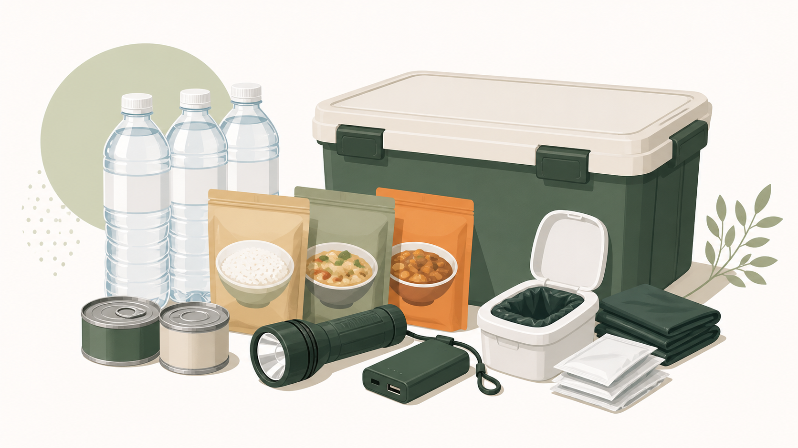

サバイブ 防災備蓄
サバイブ 防災備蓄
飯能市のご家庭向け・情報ガイド
飯能市の防災備蓄リスト
家庭で最低3日・できれば1週間分をそろえる順番
まず、飯能市の公式ハザードマップで自宅周辺の危険を確認してください。自宅で過ごすことが安全な場合に限り、このリストで水・食料・非常用トイレ・置き場所・期限管理を見直します。避難情報が出たときは、備蓄より公式情報に従った早めの避難を優先します。
1. 飯能市の災害リスクと避難情報を確認する
ハザードマップで危険がある場所では、高齢者等避難や避難指示が出た場合に避難を優先します。洪水や土砂災害などの危険性、避難情報は住所によって異なります。飯能市の防災情報とハザードマップを確認し、警戒時には埼玉県防災ポータルで最新情報も確認してください。
飯能市の防災・災害援護・危機管理情報 ｜ 飯能市洪水ハザードマップ ｜ 埼玉県防災ポータルサイト
2. 家で過ごせる場合の人数と日数を決める
自宅での待機が安全な場合を想定し、普段その家で過ごす人数分を数えます。埼玉県は水・食料を最低3日分、できれば1週間分とし、水は1人1日3リットルを目安にしています。避難が必要な場合に自宅へとどまるための備蓄にはしません。
3. 水・食料・非常用トイレを別々に数える
水、すぐ食べられる食料、断水時の非常用トイレを別々に確認します。食料は普段使う保存性のよい食品を多めに備え、使った分を補充するローリングストックで管理します。携帯トイレは埼玉県の防災マニュアルに沿って、1人1日約5回、家族の人数に応じて7日分以上を目安にしてください。
埼玉県防災マニュアルブック：家庭における災害時のトイレ対策 ｜ 非常用トイレの備えを確認する

家族人数別：最低3日分の備蓄チェック表
水は1人1日3Lなので、3日では1人9L、2人18L、4人36Lです。食料は1人1日3食を起点に、1人9食、2人18食、4人36食を確認します。非常用トイレは1人1日約5回を起点に、1人15回、2人30回、4人60回です。7日分まで増やす場合は、この数を7/3倍します。
| 品目 | 1人 | 2人 | 4人 |
|---|---|---|---|
| 水（3日） | 9L | 18L | 36L |
| 食料（3日） | 9食 | 18食 | 36食 |
| 非常用トイレ（3日） | 15回分 | 30回分 | 60回分 |
高齢者・乳幼児・ペット・持病がある家庭の追加品
高齢者は普段食べられる物、眼鏡・補聴器用品、薬の内容と相談先を確認します。乳幼児はミルク、離乳食、おむつ、おしりふきなど、普段使う物を追加します。ペットは食料・水・リードやキャリー・排せつ用品を準備し、避難先の受入条件は飯能市へ確認します。持病やアレルギーがある方は、必要品と相談先を紙にも残します。薬の変更や代替の判断は医療機関・薬局に確認してください。
飯能市の家庭で確認する「置き場所・期限管理」の実例
訪問で確認する順番は、(1)非常用トイレとライトが玄関から出られなくても取れる場所にあるか、(2)水を高い棚に置かず運べる重さで分けているか、(3)食料・電池・充電器を月1回同じ日に点検するか、(4)不足品だけを買い足すリストが残っているか、です。飯能市も持ち出し品をすぐ取り出せる場所に置き、家族構成に応じて追加・定期点検するよう案内しています。
4. 取り出せる置き場所を決める
水は落下の危険が少ない低い位置へ置きます。食料とトイレ用品は、家族が分かる場所にまとめ、玄関収納・廊下収納・押し入れなど、非常時にも取り出せる場所を決めます。
5. 期限と地域の計画を確認する
食品や電池の期限を一覧にし、使った分を補充する日を決めます。地域の災害への備えや市の対応は、飯能市地域防災計画で確認できます。
備蓄の不足を一緒に確認したい方へ
このページは、飯能市のご家庭が自分で確認するための情報ガイドです。水・食料・非常用トイレ・置き場所・期限管理を個別に確認したい方は、無料チェックをご利用ください。